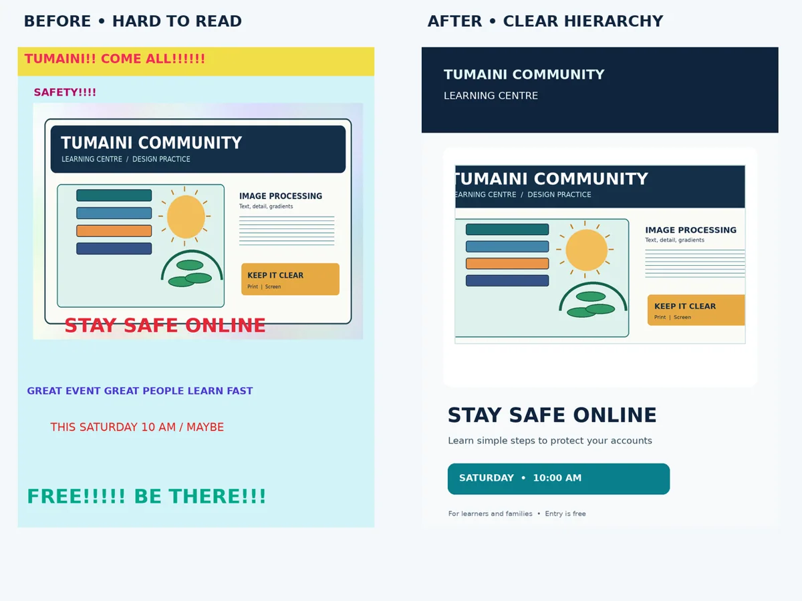
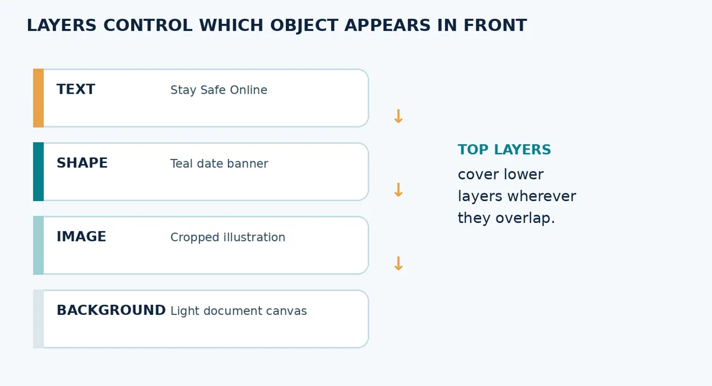
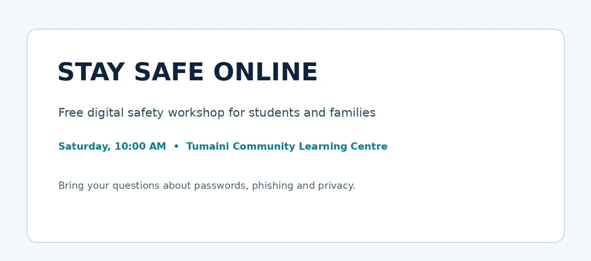
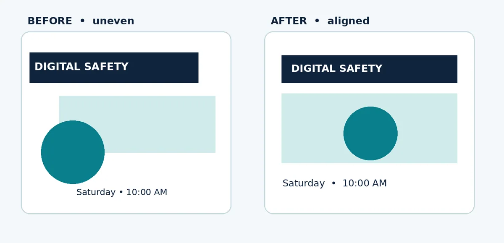
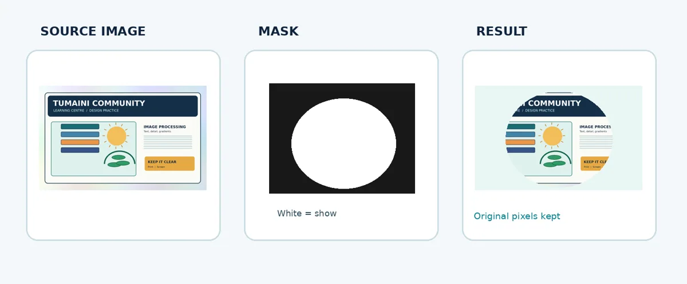
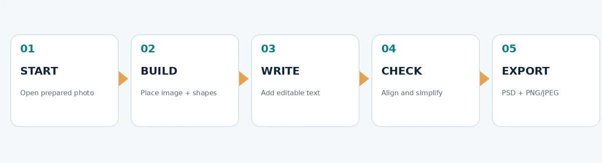

Basic Image Editing and Graphic Composition
Combine text, image and shapes to create a clear event notice with layers.
Lecture notes
A good publication combines information and images so that readers can recognise the main message quickly. In this lecture, you will use the image prepared in Lecture 4 and assemble a simple Tumaini Community Learning Centre event notice. The aim is to produce one clear graphic, not to learn every Photoshop tool.
What you should be able to do
- Explain what a graphic composition is and why visual hierarchy matters.
- Identify and organise image, shape and text layers in a Photoshop document.
- Place an image, add basic shapes and editable text, then align the main elements clearly.
- Use one simple non-destructive technique and distinguish the editable PSD from a final export.
- Assess whether the finished notice is readable, accurate and appropriate for its audience.
5.1 What is a graphic composition?
A graphic composition is the planned arrangement of visual elements, such as photographs, illustrations, shapes, text and empty space, within a defined area. In desktop publishing, these elements should support one communication goal. For example, a student event notice needs a readable title, essential event details and a clear indication of who may attend. Attractive decoration is useful only when it does not compete with that information.
Consider the fictional “Stay Safe Online” session at Tumaini Community Learning Centre. Its readers should notice the event title first, understand the purpose next and then find the date and time without searching. That order is a visual hierarchy: important information receives greater emphasis through size, position, contrast or spacing.

Figure 5.1. The same event information can be arranged poorly or clearly. The right-hand example uses consistent alignment and a stronger visual hierarchy.
5.2 Understanding layers
A layer is an independently editable component of a digital document. A Photoshop composition may contain a background, one or more images, shapes and separate text layers. Layers behave somewhat like transparent sheets stacked on top of one another. Where two objects overlap, the upper visible layer normally appears in front. Their order can be changed in the Layers panel.
For example, place a pale background at the bottom, a cropped illustration above it, a coloured date banner above the illustration when required, and the title near the top. Keeping objects separate allows you to move or correct one element without redrawing the entire notice.

Figure 5.2. The order of the layers determines which elements appear in front when objects overlap.
Good layer habits
Name important layers by purpose, such as “Title”, “Photo”, “Date banner” and “Background”. Rename vague labels such as “Layer 7 copy” when the file becomes difficult to understand. Use the eye icon to temporarily hide an element and check what belongs to each layer. Lock the background if you do not want to move it accidentally. The precise controls may differ between Photoshop versions.
5.3 Creating and arranging a document
Start with a new document or a supplied template. For this practical, an upright 1000 × 1350 pixel canvas is suitable for a fictional digital event notice. These pixel dimensions are only a teaching example, not a universal requirement. Decide whether the main output will be shown on a phone, projected in class or printed; the intended use determines the appropriate document size and export.
Use File > Place Embedded (or the equivalent placement command) to add the prepared Tumaini illustration. You can use Free Transform to reposition or scale the placed image. When resizing, keep the object’s proportions and avoid stretching it. A placed image may not fill the entire area; small empty margins can be useful if they improve readability.
5.4 Using shape and text tools
Shape tools create simple rectangles, circles and other forms. A shape may provide a coloured background for a date, make a small symbol or visually separate two pieces of information. Use only the shapes needed to clarify the layout. A large number of unrelated shapes can make a notice confusing.
The Type Tool adds text as an editable text layer. Use a clear heading for “STAY SAFE ONLINE”, a smaller line explaining the session and a distinct line for date and time. Body text must remain readable; do not make it tiny merely to fit more words on the page. In Photoshop, text created with the Type Tool normally remains editable as long as the text layer is preserved and not rasterised.

Figure 5.3. Type hierarchy: the title attracts attention first, followed by the explanation and practical event details.
5.5 Alignment, spacing and contrast
Alignment means that related objects share an intentional edge or centre line. When a heading, image and event details use a common left margin, the reader can follow the layout more easily. Consistent spacing creates groups: an event date should sit close to the event description it belongs to, while unrelated information needs more separation. Empty space is not wasted space; it keeps a composition understandable.
Contrast helps a reader distinguish elements. Dark text against a pale background is often easier to read than two similar tones. Colours should suit the message. In this example, a navy heading and restrained teal accent create a consistent appearance. Choose one main typeface with a limited number of styles rather than mixing many decorative fonts.

Figure 5.4. The aligned composition uses consistent margins and spacing.
5.6 A simple non-destructive editing habit
Non-destructive editing means preserving information so that an earlier decision can be changed. A beginner can begin by duplicating the image layer before changing it, instead of editing the only copy. A layer mask is another useful technique: white parts of a mask reveal a layer and black parts hide it, while the original pixels remain available. This is often safer than deleting part of a photograph permanently.
You only need to understand the basic purpose of a mask in this lecture. Accurate complex selections and detailed portrait retouching belong to further independent study. For our notice, a simple rectangular image is entirely acceptable if it already communicates clearly.

Figure 5.5. A layer mask controls visibility without removing the hidden pixels.
5.7 Building the Tumaini event notice
The publication is a fictional advertisement for a community learning session. Use the supplied copy and previously edited illustration. Produce one understandable design instead of several incomplete variations.
1. Create a new portrait-oriented document (for example, 1000 × 1350 pixels) and save it in the working-files folder.
2. Place the prepared image on its own layer and move it to an appropriate part of the canvas.
3. Add a simple coloured shape, such as a narrow banner, only where it improves readability.
4. Use the Type Tool to add the organisation name, the main event heading, a short description and date/time.
5. Align the elements, check the contrast and leave enough space around important information.
6. Save the editable file as tumaini_event_notice.psd. Then export a copy as tumaini_event_notice.png or .jpg.
7. Reopen the exported file and check that no words or important parts of the picture are missing.

Figure 5.6. A repeatable workflow for a basic image-and-text composition.
5.8 Checking quality and avoiding common mistakes
| Problem | What to check |
|---|---|
| Text hides behind the image | Move the text layer above the image in the layer stack. |
| A headline is difficult to read | Use stronger contrast, a suitable type size and a less busy background. |
| The illustration looks stretched | Restore its proportions using transform controls. |
| Objects appear disconnected | Use shared margins and consistent spacing. |
| Only a flattened image was submitted | Keep the editable Photoshop project and export a separate final copy. |
A successful output does not need complicated effects. It should communicate the event accurately, remain readable and be editable for later changes. If some tools are not available on your computer, plan the same arrangement on paper and complete the software-based file during the practical session.
5.9 Review questions
1. What makes a graphic composition different from a collection of unrelated pictures and text?
2. Explain the role of a layer and how layer order affects the appearance of a notice.
3. What are two advantages of keeping the event title as an editable text layer?
4. How can contrast, alignment and proximity improve an event poster?
5. What is a non-destructive edit? Give one example suitable for beginners.
6. Why should you save both an editable project and a final PNG or JPEG?
Further reading
Use the comprehensive Desktop Publishing materials, particularly Lecture 12 on layers and masks and Lecture 13 on graphic artwork. These readings extend the classroom practical; the essential requirement here is a clear, simple and editable notice.
Simple practical activity
Create a simple event notice
Design a “Stay Safe Online” event notice with a title, image, short event details and one coloured shape. Keep text, image and background as separate editable layers.
Read the full guided practical instructions
Tumaini Community Learning Centre needs a simple digital notice for its fictional “Stay Safe Online” session. Work with the supplied picture and text. Create a clean design containing a title, image, short explanation and event time. A clear and accurate publication matters more than decorative effects.
Resources and expected files
Use Tumaini_Cropped_Image.png, Tumaini_Logo_Transparent.png (optional) and Student_Project_Text.txt from the practice resources. The model design is a visual example, not a file to submit unchanged. You will create your own editable Photoshop document.
| Working file | Final export |
|---|---|
| 02_Working_Files/tumaini_event_notice.psd | 03_Exports/tumaini_event_notice.png (or .jpg) |
Part A — Prepare and plan
1. Open your Tumaini_Handout folder from Lecture 4 and check that the original illustration is still preserved.
2. Look at the crowded and clear notice examples. Write down two reasons the clearer notice is easier to understand.
3. Sketch a title area, image area and date/time area before editing.
Observation 1: _______________________________________________________________________ Observation 2: _______________________________________________________________________
Part B — Build the graphic in Photoshop
1. Create a portrait canvas (approximately 1000 × 1350 pixels), then save the project immediately.
2. Place Tumaini_Cropped_Image.png on a separate layer. Scale it proportionally and position it below the title.
3. Add an editable heading: STAY SAFE ONLINE. Add one short description and the session time.
4. Add a simple shape behind the time or action line if needed. Use readable contrast and keep decorative colours limited.
5. Rename at least four layers: Background, Photo, Headline and Date banner (or similar accurate names).
6. Check alignment, leave enough space at the edges and remove unnecessary decoration.
Part C — Save, export and verify
1. Save the editable Photoshop file as tumaini_event_notice.psd.
2. Export a PNG or JPEG copy. Reopen the exported file outside the editor to confirm that its text and image are visible.
3. Compare the export against your brief. Check the title, image quality, spacing, date/time accuracy and file name.
Checklist: □ Source preserved □ Separate layers □ Editable text □ Clear hierarchy □ PSD saved □ Export checked
Short reflection
1. Which element should a reader notice first, and how did you make it prominent? ________________________________________________________________________________
2. Explain one improvement you made to alignment, spacing or contrast. ________________________________________________________________________________
3. Why is your Photoshop file more useful for later editing than the exported PNG/JPEG? ________________________________________________________________________________
Alternative when Photoshop is unavailable
Use the printed starter artboard and the event details to sketch an A4 notice. Label the intended image, text, shape and background layers. Explain in writing how you would save an editable file and export an image. This allows you to practise the design reasoning; the editable digital output can be completed in the laboratory.
Submit your original editable project, the final exported notice and this completed reflection. Do not submit the unmodified model poster as your own work.
Self-check before submission
| Feature | Checked? | Change still needed |
|---|---|---|
| Main title and event time | Yes / No | _______________________ |
| Image and layer organisation | Yes / No | _______________________ |
| Spacing and readability | Yes / No | _______________________ |
| Editable file and exported image | Yes / No | _______________________ |
Review questions
Try explaining each answer in your own words before using the quiz.
- Explain the purpose of layers in a graphic composition.
- What makes the heading on an event poster effective?
- Why is a layer mask considered a non-destructive tool?